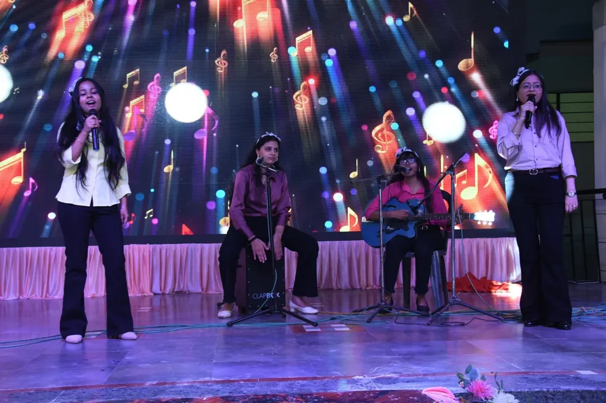

Creative Identity
From stage acts to curated presentations, Srijan gives students a distinct platform to build a voice.
VSICS Cultural Signature
Srijan is the creative pulse of VSICS. It brings together performance, design, expression, theatre and student energy into one campus celebration that feels bold, youthful and memorable.


More than an annual fest, Srijan is designed as a stage for expression. The event celebrates confidence, teamwork, originality and the joy of performing in front of the campus community.
From stage acts to curated presentations, Srijan gives students a distinct platform to build a voice.
Teams from different programs come together to rehearse, organize, perform and deliver a shared experience.
Every act becomes a chance to lead, speak, present and perform with conviction in front of peers and faculty.
Each zone shapes the festival in a different way, creating a day that feels layered, dynamic and full of movement.
Solo and group performances that bring rhythm, costume, transitions and high energy to the main stage.
Vocals, instrumentals and unplugged performances that keep the crowd engaged between larger stage acts.
Concept-based presentations, coordinated styling and confident stage movement delivered by student teams.
Poster work, handmade creativity and visual ideas that add texture and personality across the event space.
Nukkad natak and expressive performance pieces that bring message-driven storytelling into the festival.
Crowd moments, candid interactions, awards and spontaneous memories that make Srijan feel alive.
Srijan stands out because it blends performance with participation. It feels polished on stage and vibrant off stage.

Lights, applause, anchors and visual storytelling give the event a true festival identity rather than a simple photo album feel.

The strongest moments come from student ownership, where coordination, presence and enthusiasm drive the atmosphere.
A fuller visual collection of performances, group moments, stage presence and creative participation from Srijan.


.webp)
